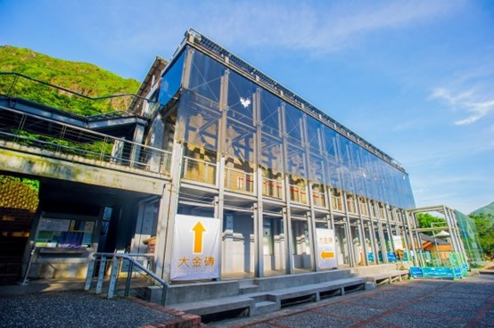

台北市立動物園
-
地址:
臺北市文山區新光路二段30號
-
票價:
全票:$60
學生票:$30
團體票7折
-
開放時間:
9:00~17:00(16:00最後入園)
動物展示:9:00~16:30
-
簡介:
臺北市立動物園創立於1914年，當時位於圓山，舊稱為「圓山動物園」。後來因為無法擴建，在1986年時搬到文山木柵區，成為全台面積最大的動物園，也就是大家熟悉的「木柵動物園」。結合自然保育、教育研究及寓教於樂，也是學校遠足、戶外教學的熱門景點喔！除了多樣化的動物探索場域，園區還有固定的企鵝餵食秀、無尾熊解說及定期更換主題的動物保母講古活動，非常適合大小朋友一起來認識動物！
黃金博物館
-
地址:
新北市瑞芳區金光路8號
-
票價:
全票:$80
-
新北市之市民
-
65歲以上年長者（限本國籍）
-
未滿12歲之孩童
-
國內各級學校之學生
-
身心障礙者及其陪伴者
-
55歲以上之原住民
-
持有低收入戶證明
-
持有志願服務榮譽卡之志工
-
中華民國博物館學會之會員
持以上證明者免費入園
-
營業時間:
週一~周五9:30~17:00
週六、日:9:30~18:00

-
簡介:
臺北市立動物園創立於1914年，當時位於圓山，舊稱為「圓山動物園」。後來因為無法擴建，在1986年時搬到文山木柵區，成為全台面積最大的動物園，也就是大家熟悉的「木柵動物園」。結合自然保育、教育研究及寓教於樂，也是學校遠足、戶外教學的熱門景點喔！除了多樣化的動物探索場域，園區還有固定的企鵝餵食秀、無尾熊解說及定期更換主題的動物保母講古活動，非常適合大小朋友一起來認識動物！
Xpark
-
地址:
桃園市中壢區春德路105號
-
票價:
全票:$550
學生票:$400
孩童票:$250
博愛票$250
-
開放時間:
周日~周五10:00~18:00
週六:10:00~20:00
-
簡介:
位於中壢青埔的「Xpark水生公園」，是日本八景島團隊打造的日系都會型水族館，高鐵桃園站、機場捷運都可直達，交通上非常方便，採線上購票，掃描QR code就可直接進場，4500坪13個展區讓你有全新的體驗感。
一百種味道
-
地址:
總店: 300新竹市北區勝利路183號
三民店: 300新竹市東區三民路35號
-
開放時間:
總店:11:00~18:30每周一公休
三民店:12:00~18:30每周一公休
-
備註:
總店:全外帶
三民店:外帶&預約制內用
-
簡介:
店內用顯微鏡選擇全台的美麗食材，再用手做、新鮮的熱情喚醒它,放進烤箱 冒出香味，一些簡單的堅持，串成一幅在地的美味地圖。
清水地熱公園
-
地址:
宜蘭縣大同鄉三星路八段501巷150號
-
開放時間:
9:00~17:00
-
簡介:
免門票的清水地熱除了煮溫泉蛋、泡腳，還能泡暖湯啦！與太平山鳩之澤溫泉一樣，都是碳酸氫鈉泉，泉水呈現寶藍色，在檜木池裡享用熱呼呼的溫泉，還能同時欣賞山林。能自己DIY用竹簍主食玉米、溫泉蛋…..，十分好玩!
-
販賣之食物價目表:
靜宜大學 資料科學暨大數據分析與應用學系 周鈺芳 鄭巧盈 蔡宜瑾 謝郁萱 製作